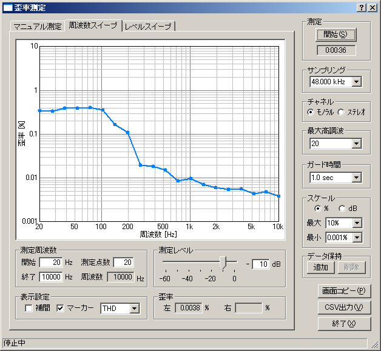

DSSF3 > RA > リファレンス
歪率測定
- 共通設定項目
- マニュアル測定
- 周波数スイープ
- レベルスイープ

歪率測定機能を使用して、アンプやスピーカの周波数および出力レベルに対する歪み率を、自動的にグラフ化することができます。
アンプの歪率を測定する場合は、パソコンのラインアウトをアンプのライン入力へ接続し、アンプのスピーカ出力をパソコンのライン入力に接続します。入力デバイスはライン入力を選択しておきます。アンプのボリュームは最初は一番絞っておき、メインウィンドウのピークレベルメータまたはオシロスコープを見ながら、クリップしない範囲に調整します。調整が終わったら歪率測定ウィンドウを開き、周波数スイープまたはレベルスイープを実行します。
スピーカの歪率を測定する場合は、マイクをパソコンのマイク入力端子に接続し、入力デバイスはマイク入力を選択します。この場合、測定された歪率はアンプとスピーカ両方の歪を合わせたものとなりますが、一般的にアンプの歪率はスピーカに比べて非常に小さいので、ほぼスピーカの歪率を表したものとなります。
測定結果は、CSVファイルまたは別売のマルチメディアライブラリ(MMLIB)で画像として保存することができます。そこで、改善すべき点があれば、アンプの回路等の調整と、測定
チューニングを繰り返していきます。
歪率測定（THD Analyzer）は全高調波歪み（Total Harmonic Distortion） を測るための機能です。
THDは高調波成分の実効値和と基本波の実効値との比をdB(%)で表現したものです。入力にサイン波相当のデータを与え，出力波形を計測する。通常2次から5次程度までの高調波成分（v2，v3，v4，v5）の実効値の総和の相乗平均を求め、基本波の実効値（v1）との比をdBで表す物が一般的ですが、このアナライザーは使用するサウンドボードやCPUの性能が高い場合、最大30次までの高調波成分を測定できます。
指定した周波数と出力レベルにおける高調波成分を測定する
マニュアル測定、周波数を自動的に変えながらTHDを測定しグラフ表示する
周波数スイープ、出力レベルを自動的に変えながらTHDを測定しグラフ表示する
レベルスイープの3種類の測定が可能です。
DSSF3 > RA > リファレンス